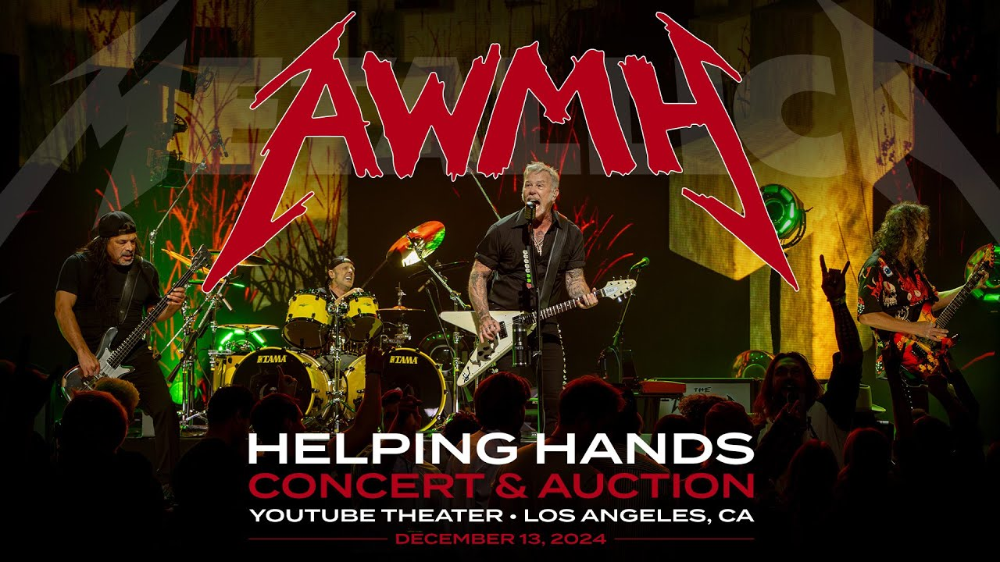
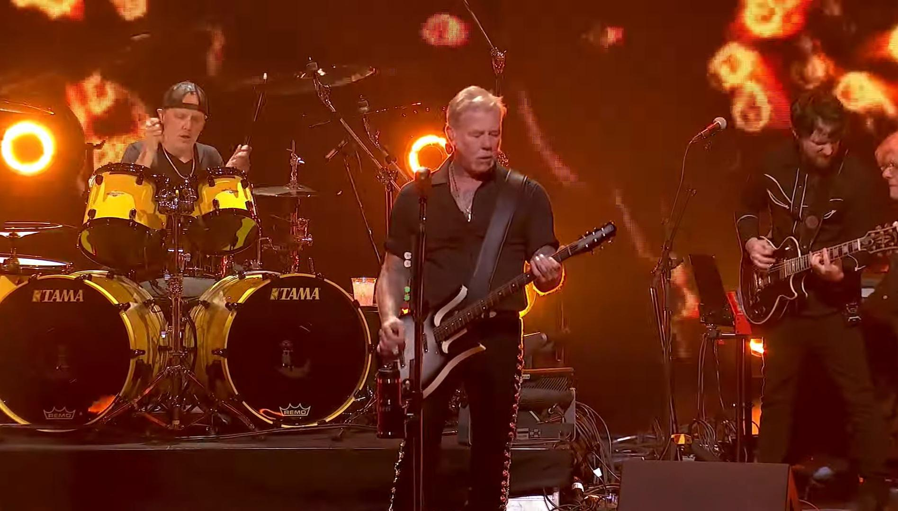
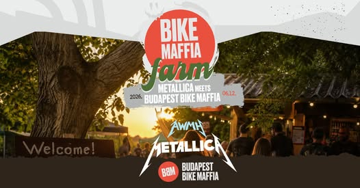

A Helping Hands Concert & Auction a Metallica egyik legismertebb jótékonysági kezdeményezése, amelyet az All Within My Hands Foundation támogatására hoztak létre. Az esemény különleges koncertekből és árverésekből áll, amelyek bevételeit jótékony célokra fordítják.
Az első Helping Hands rendezvényt 2018-ban tartották. A koncertek során a Metallica gyakran eltér a megszokott fellépéseitől, és több akusztikus, ritkán játszott vagy különleges hangszerelésű dalt is előad. Ez egyedi élményt nyújt a rajongóknak, miközben az esemény jótékony célt szolgál.
Az árveréseken különleges relikviák, dedikált hangszerek, koncertemlékek és exkluzív élmények kerülnek kalapács alá. Ezek jelentős bevételt generálnak, amelyet az alapítvány oktatási, közösségi és humanitárius programokra fordít.
A Helping Hands eseményeken gyakran vendégelőadók és ismert zenészek is fellépnek. Az esték célja nemcsak az adománygyűjtés, hanem a közösségépítés és annak bemutatása is, hogy a zene milyen pozitív hatást gyakorolhat a társadalomra.
Az évek során a Helping Hands a Metallica egyik legfontosabb jótékonysági projektjévé vált. A kezdeményezés jól mutatja, hogy a zenekar a zenei sikereit igyekszik a közösségek támogatására és a társadalmi felelősségvállalás erősítésére is felhasználni.


